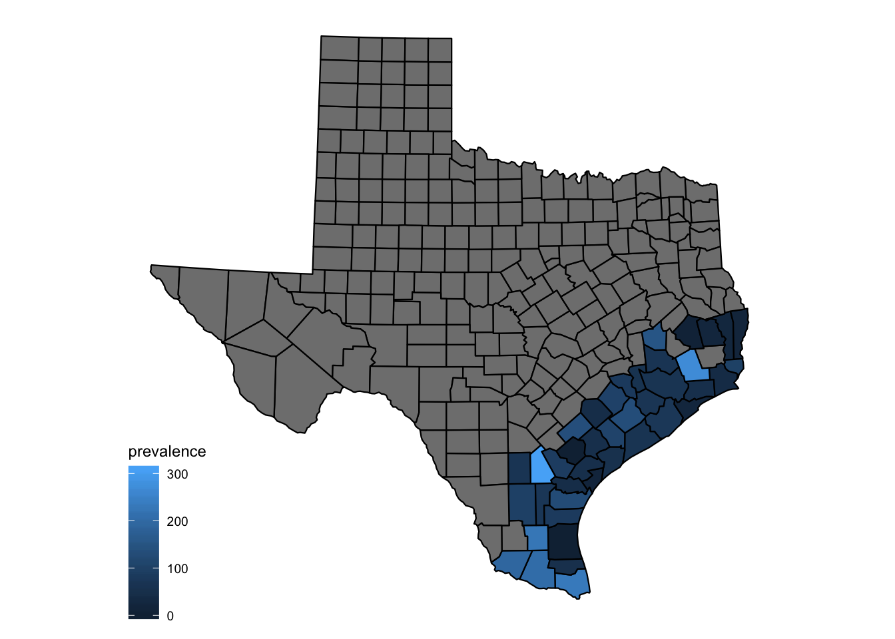

5 Prevalence
- The fraction of the population who are currently infected and capable of infecting others.
- Can be estimated with the confirmed COVID-19 cases of the last 7 days
- Confirmed case counts represent somewhere between one third and one tenth of all infections
5.1 East Gulf Coast
- prevalence for each 10,000 evacuees
5.2 Central Gulf Coast
5.3 South Gulf Coast
5.4 On Aug 27
